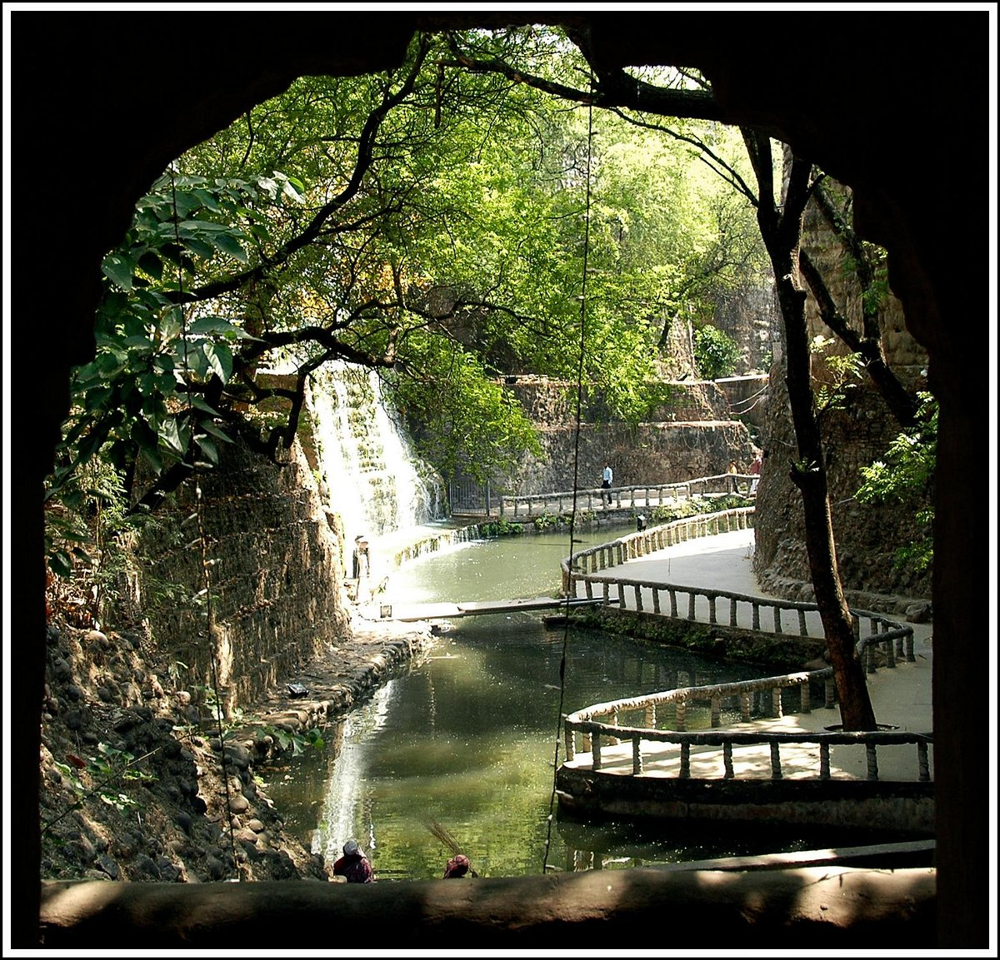
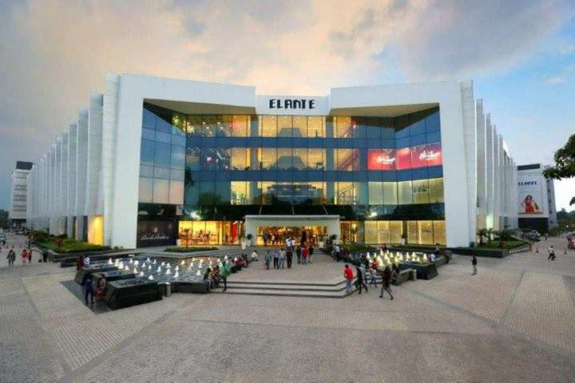

Rock Garden
The Rock Garden of Chandigarh is a unique sculpture garden created by Nek Chand. It features sculptures made from industrial and urban waste, showcasing creativity and sustainability.
Fun Fact:
~It was built secretly by Nek Chand in his spare time and was later opened to the public!
Things to Explore at Rock Garden:
-
Sculptures:
Marvel at thousands of sculptures made from recycled materials.
-
Waterfalls:
Enjoy the serene beauty of waterfalls and ponds scattered throughout the garden.
-
Pathways:
Wander through winding pathways that lead to hidden corners of the garden.
-
Art Installations:
Discover various art installations that reflect the creativity of local artists.
Why Visit Rock Garden?
!Because it’s not just a garden; it’s a masterpiece that transforms waste into art, inspiring visitors with its innovative approach to sustainability.

Sukhna Lake
Sukhna Lake is an artificial reservoir that offers a tranquil escape from the city’s hustle and bustle. It’s a perfect spot for boating, picnicking, and enjoying nature.
Fun Fact:
~It was created in 1958 and is now a UNESCO World Heritage Site!
Things to Explore at Sukhna Lake:
-
Boating:
Rent a paddle boat or a shikara to explore the serene waters of the lake.
-
Walking Trails:
Enjoy leisurely walks along the well-maintained walking trails around the lake.
-
Bird Watching:
Spot migratory birds that flock to the lake during winter months.
-
Picnic Spots:
Relax and have a picnic in designated areas with stunning views of the lake.
Why Visit Sukhna Lake?
!Because it’s not just a lake; it’s a peaceful oasis that offers a perfect blend of nature and tranquility, making it an ideal getaway for relaxation.

Rose Garden
Zakir Hussain Rose Garden is Asia’s largest rose garden, home to over 1,600 different species of roses. It’s a paradise for nature lovers and photography enthusiasts.
Fun Fact:
~It was established in 1967 and is named after the former President of India, Zakir Hussain!
Things to Explore at Rose Garden:
-
Rose Varieties:
Admire the stunning variety of roses in full bloom during the spring season.
-
Walking Paths:
Stroll through beautifully landscaped paths surrounded by vibrant flowers.
-
Musical Fountain:
Enjoy the evening musical fountain show that adds charm to the garden.
-
Photography Spots:
Capture breathtaking photographs amidst the colorful blooms.
Why Visit Rose Garden?
!Because it’s not just a garden; it’s a floral wonderland that offers a sensory delight with its vibrant colors and enchanting fragrances, making it a must-visit for all nature enthusiasts.

Nehru Planetarium
Nehru Planetarium is a fascinating place for astronomy enthusiasts. It offers interactive exhibits, shows, and educational programs about space and the universe.
Fun Fact:
~It is named after Jawaharlal Nehru, India’s first Prime Minister, who was a great advocate of science and technology!
Things to Explore at Nehru Planetarium:
-
Planetarium Shows:
Watch captivating shows that take you on a journey through the cosmos.
-
Interactive Exhibits:
Engage with hands-on exhibits that explain various astronomical phenomena.
-
Telescope Viewing:
Participate in telescope viewing sessions to observe celestial objects.
-
Educational Programs:
Attend workshops and lectures conducted by experts in the field of astronomy.
Why Visit Nehru Planetarium?
!Because it’s not just a planetarium; it’s a gateway to the universe that inspires curiosity and wonder about the mysteries of space, making it an enriching experience for visitors of all ages.

Elante Mall
Elante Mall is one of the largest shopping malls in Chandigarh, offering a wide range of shopping, dining, and entertainment options. It’s a perfect place for a day out with family and friends.
Fun Fact:
~It features over 200 brands, making it a shopper’s paradise!
Things to Explore at Elante Mall:
-
Shopping:
Shop from a variety of local and international brands under one roof.
-
Dining:
Enjoy a diverse range of cuisines at the food court and restaurants.
-
Entertainment:
Catch the latest movies at the multiplex or enjoy gaming zones.
-
Events:
Participate in various events and exhibitions held throughout the year.
Why Visit Elante Mall?
!Because it’s not just a mall; it’s a vibrant hub of shopping, dining, and entertainment that offers something for everyone, making it an ideal destination for a fun-filled day out.

Sector 17 Plaza
Sector 17 Plaza is the commercial center of Chandigarh, known for its vibrant atmosphere, shopping options, and cultural events. It’s a great place to experience the city’s urban life.
Fun Fact:
~It was designed by the famous architect Pierre Jeanneret, who collaborated with Le Corbusier!
Things to Explore at Sector 17 Plaza:
-
Shopping:
Explore a variety of shops and boutiques offering local handicrafts and fashion.
-
Street Food:
Savor delicious street food from various stalls and eateries.
-
Cultural Events:
Attend cultural performances and events that take place regularly.
-
People Watching:
Enjoy the lively atmosphere and people-watch in this bustling plaza.
Why Visit Sector 17 Plaza?
!Because it’s not just a plaza; it’s the heart of Chandigarh that offers a blend of shopping, dining, and cultural experiences, making it a must-visit for anyone exploring the city.

Government Museum and Art Gallery
The Government Museum and Art Gallery is a treasure trove of art, history, and culture. It houses a vast collection of artifacts, paintings, and sculptures that reflect the rich heritage of Chandigarh.
Fun Fact:
~It was established in 1968 and is one of the most important museums in India!
Things to Explore at Government Museum and Art Gallery:
-
Art Collections:
Admire the extensive collection of Indian and Western art, including works by renowned artists.
-
Historical Artifacts:
Explore artifacts that showcase the history and culture of Chandigarh and Punjab.
-
Sculpture Gallery:
Discover a unique collection of sculptures from different periods and styles.
-
Educational Programs:
Participate in workshops and lectures conducted by experts in art and history.
Why Visit Government Museum and Art Gallery?
!Because it’s not just a museum; it’s a cultural hub that offers a deep insight into the artistic and historical significance of Chandigarh, making it an enriching experience for art lovers and history enthusiasts alike.

Punjab University Campus
The Punjab University Campus is an architectural marvel designed by the famous architect Le Corbusier. It’s a vibrant educational hub with stunning buildings and lush green spaces.
Fun Fact:
~It is one of the few universities in India that has been designated as a UNESCO World Heritage Site!
Things to Explore at Punjab University Campus:
-
Architectural Wonders:
Marvel at the unique architectural designs of various buildings on campus.
-
Libraries:
Visit the central library, which houses a vast collection of books and re materials.
-
Cultural Events:
Attend cultural events and exhibitions organized by the university.
-
Green Spaces:
Enjoy leisurely walks in the beautifully landscaped gardens and parks.
Why Visit Punjab University Campus?
!Because it’s not just a university; it’s a blend of education, culture, and architecture that offers a unique experience for visitors, making it a must-visit destination in Chandigarh.